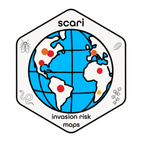

scari R Package Overview 
scari is an R package and research compendium that documents a multiscale species distribution modeling (SDM) workflow to forecast establishment and impact risk of a species invasion as it shifts with climate change.
We developed this workflow to quantify the shifting risk of future establishment of the invasive species Lycorma delicatula (spotted lanternfly or SLF) in important viticulture regions worldwide. The R function create_risk_report produces risk maps, range shift estimates, risk plots and other outputs at the scale of countries or smaller geopolitical units.
Citation
The package scari is a research compendium for:
Owens, S. M. (2024). Multi-scale Modeling of the Spotted Lanternfly Lycorma delicatula (Hemiptera: Fulgoridae) Reveals Displaced Risk to Viticulture and Regional Range Expansion Due to Climate Change [M.S., Temple University]. In ProQuest Dissertations and Theses (3099643448). https://www.proquest.com/dissertations-theses/multi-scale-modeling-spotted-lanternfly-em/docview/3099643448/se-2?accountid=130527
Installation
This package should be first be downloaded and installed from GitHub by running the following code:
require(devtools)
# install.packages("devtools") # if devtools is not installed yet
devtools::install_github("ieco-lab/scari")
library(scari)The dependency packages should then be installed for the package to run properly:
Here are the main packages that scari depends on:
install.packages(c('cli', 'common', 'CoordinateCleaner', 'devtools', 'dismo', 'ENMTools', 'formattable', 'gginnards', 'ggspatial', 'gitcreds', 'grid', 'here', 'httr', 'kableExtra', 'kgc', 'patchwork', 'pkgdown', 'plotROC', 'pROC', 'raster', 'rasterVis', 'remotes', 'renv', 'rgbif', 'rJava', 'rmarkdown', 'rnaturalearth', 'scales', 'SDMtune', 'sf', 'sp', 'stats', 'stringr', 'terra', 'tidyverse', 'usethis', 'utils', 'viridis', 'webshot', 'webshot2'))
# Install package which cannot be obtained from the CRAN
library(devtools)
remotes::install_github("ieco-lab/lydemapr", build_vignettes = FALSE)
remotes::install_github("ropensci/rnaturalearthdata")
remotes::install_github("ropensci/rnaturalearthhires")
remotes::install_github("densitymodelling/dsmextra")
# install specific versions of packages
remotes::install_version("ggnewscale", version = "0.4.10") # due to issue with color scales
remotes::install_version("GeoThinneR", version = "1.1.0") # due to issue with thin_points
remotes::install_version("tidygeocoder", version = "1.0.5") # due to issue with reverse_geocode()
# we also suggest installing the following packages if using the appendix in vignette 050:
install.packages("blockCV")Sitemap
This GitHub project is organized into general sections of our modeling pipeline. Each article can be found in vignettes. Please see this sitemap for navigating both the GitHub repo and our site:
- vignette 010: Initialize
scariand usage ofrenvpackage for dependencies - 020-030: 1. Retrieve and tidy input data for MaxEnt
- 040-090: 2. SDM modeling pipeline: train global and 3 regional-scale models
- 100-110: 3. Ensemble Regional-scale SDMs
- 120-130: 4. Quantify SLF risk
- 140-142: 5. Quantify Model fitmodel fit
- 150-152: Example usage of our function create_risk_report() (150) to create reports for global countries and states/provinces (151), and for the USA specifically (152).
How to Use this Project
Before diving into this project and our modeling workflow, an end user should:
- Read the companion paper, which outlines the conceptual underpinnings for this project
- Download, build and install this package locally
- Install the package
renv, and runrenv::restore()inside the R project, which ensures that your R package versions are consistent for running this package. (NOTE: this creates a project-specific R package library, so it should not affect your main library). - Run the first vignette, 010_initialize_renv, which initializes
renvand lists our package’s dependencies. - See “Get Started” for help in using our package to produce localized reports on SLF risk to viticulture or to recreate our analysis for another invasive species of interest
Notes about using this package’s code
I use some of the followin conventions to ensure that the package’s .html files render correctly, the code is not overly cumbersome to run, and that data aren’t re-downloaded unnecessarily:
- I have added a number of
if()statements throughout my vignettes, usually to prevent data from being downloaded again unnecessarily. Simply change theFALSEwithin theif()statement toTRUEto run a chunk. - I have a chunk near the beginning of every vignette that sets the global chunk options:
knitr::opts_chunk$set(eval = FALSE). This prevents the code from running automatically when the vignette is rendered. You can change this toTRUEif you want to run the code in that chunk. - I have added html comment tags (
<!--and-->) to the code chunks that I do not want to run automatically as the website is rendered. Much of the code that is commented out is redundant, but I have left it in the code for reference so as not to disrupt the true workflow. You can remove these comments if you want to run the code in those chunks.
Computing Information
This package was developed and its vignettes were rendered on a Dell Precision desktop PC with the following characteristics:
- Core: intel Xeon CPU, 3.60 GHz
- RAM memory: 64 GB
- Operating System: Windows 11 Enterprise, version 24H2
- R version: 4.5.1
- Rstudio version: 2025.05.1+513
Other software:
Be sure to download and install Java to use this package: https://www.oracle.com/java/technologies/downloads/#java24. Be sure to install the correct bit version for your OS.
References
Gallien, L., Douzet, R., Pratte, S., Zimmermann, N. E., & Thuiller, W. (2012). Invasive species distribution models – how violating the equilibrium assumption can create new insights. Global Ecology and Biogeography, 21(11), 1126–1136. https://doi.org/10.1111/j.1466-8238.2012.00768.x
Huron, N. A., Behm, J. E., & Helmus, M. R. (2022). Paninvasion severity assessment of a U.S. grape pest to disrupt the global wine market. Communications Biology, 5(1), 655. https://doi.org/10.1038/s42003-022-03580-w
Phillips, S. J., Anderson, R. P., & Schapire, R. E. (2006). Maximum entropy modeling of species geographic distributions. Ecological Modelling, 190(3), 231–259. https://doi.org/10.1016/j.ecolmodel.2005.03.026